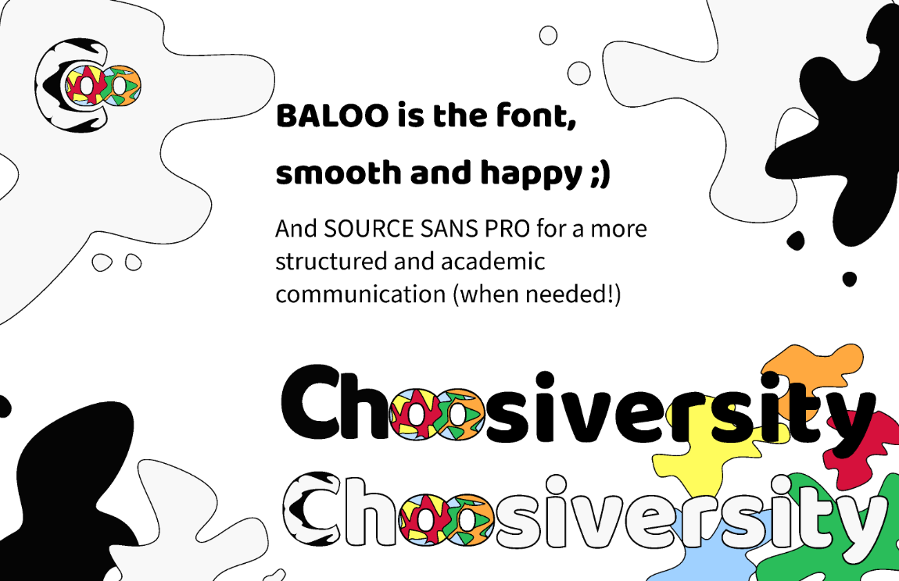

.png)
HCI Project Januari-March 2024
Choosiversity
Key responsibilities:
UX Research
- Desk research
- User Interviews
- User
Visual & Information Design
- Rapid Prototyping
- Interface Design
- Recommendation System Design
HCI Project Januari-March 2024
Key responsibilities:
UX Research
Visual & Information Design
Our desk research shows that high school graduates often struggle to find an university and study that perfectly fits with them. This is especially true for students who consider studying abroad, as this greatly increases their range of possibilities. Addressing these challenges with a recommendation system that gathers the needs and wants of a student in a fun and engaging way can help young adults form better informed opinions on their next steps.
To figure out what aspiring students are looking for, we conducted five interviews with our target audience and we performed a literature review of available research about the needs of the target audience and what kind of solutions already exist.
To develop the interface, a mood board was designed from scratch to make the overall appearance of the platform coherent with the goal of the project; to decrease the stress and to make the journeys of choosing the university more fun. Therefore, it has been decided to implement rounded fonts and shapes, bright colors, and quirky doodles in order to communicate and deliver this dimension of lightness and happiness.
The final design was created through iterative design. After a prototype was finished a cognitive walkthrough was performed with a member of the target audience. This feedback would inform us about the strengths and weaknesses of the design, causing us to continuously refine and change the application for the better.
[1]Abdijabbar Nor. 2018. Factors contributing to the students’ choice of university. "Imperial Journal of Interdisciplinary Research (IJIR), Vol-4, (Jan. 2018), 49–55.
[2]Francesco Ricci, Lior Rokach, and Bracha Shapira. 2011. Introduction to recommender systems handbook. In Recommender systems handbook. Springer, 1–35
[3]Angelina de CA Ziesemer, Luana Müller, and Milene S Silveira. 2014. Just rate it! gamification as part of recommendation. In International Conference on Human-Computer Interaction. Springer, 786–796